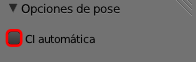

La pata
Preparativos
- Lo primero y fundamental es que desactivemos la opción CI automática en el caso de haberla dejado activada.

- El hueso ik_control.L no debe ser hijo de tibia.L sino de posición (el padre final). Lo cambiamos en el panel adecuado
 siempre que estemos en Modo edición
siempre que estemos en Modo edición  . En realidad debe ser hijo de un hueso que esté después de femur.L y quedar desconectado.
. En realidad debe ser hijo de un hueso que esté después de femur.L y quedar desconectado.
- Para una mejor organización es importante ir al panel Objeto
 y al esqueleto darle un nombre apropiado como puede ser... esqueleto.
y al esqueleto darle un nombre apropiado como puede ser... esqueleto.
En Modo Posado  a tibia.L le asignamos una Restricción de hueso
a tibia.L le asignamos una Restricción de hueso  de tipo Cinemática inversa (no confundir con el panel Restricciones
de tipo Cinemática inversa (no confundir con el panel Restricciones  porque las restricciones de hueso tienen su propio panel
porque las restricciones de hueso tienen su propio panel  ).
).
No pasa nada en el rigging salvo una línea punteada que nos informa del comienzo y del final de la cinemática inversa. Comienza en la cola de tibia.L y finaliza en la cabeza de posición (el padre final). ¿Por qué?. Porque esa es la cadena de huesos emparentados: tibia.L - femur.L - cadera.L - pivote - posicion (recordemos que ik_control.L ha quedado fuera).
Si movemos tibia.L en Modo Posado  la cinemática funciona pero de una manera incontrolada porque se extiende hasta posicion. Así que lo primero es decirle a Blender que queremos que no considere la cadena completa sino sólo un tramo de dos huesos (tibia.L y femur.L). Editamos Longitud de cadena:2.
la cinemática funciona pero de una manera incontrolada porque se extiende hasta posicion. Así que lo primero es decirle a Blender que queremos que no considere la cadena completa sino sólo un tramo de dos huesos (tibia.L y femur.L). Editamos Longitud de cadena:2.

La cinemática funciona mucho mejor aunque la rodilla se descontrola de vez en cuando.
Sin embargo no es eso lo que queremos. Lo que buscamos es que la cinemática de tibia.L se active de un modo indirecto mediante el desplazamiento de ik_control.L.
- En el cuadro de la restricción escogemos como Objetivo: esqueleto (por eso era importante asignar un nombre apropiado para este objeto). Esto hace que se genere un nuevo campo llamado Hueso...
- ... en el que seleccionamos ik_control.L.
Ahora al desplazar ik_control.L el control de la cinemática inversa es mucho mayor. Además presenta una curiosidad: si desplazamos más abajo de lo que mide la propia pierna el hueso se descuelga.
Eso es intrascendente en esta edición pero es la base que justifica lo siguiente. Si seleccionamos pivote en Modo Posado  y desplazamos hacia abajo, el resultado es impresionante al no poder afectar a ik_control.L.
y desplazamos hacia abajo, el resultado es impresionante al no poder afectar a ik_control.L.
La segunda pata
Repetimos el mismo proceso para la pata derecha:
- Hacemos que ik_control.R sea hijo de posicion.
- Le asignamos a tibia.R una restricción de Cinemática inversa con una Longitud de cadena: 2 con Objetivo: esqueleto y Hueso: ik_control.R.
Cuando esté terminada esta segunda pata ya podremos seleccionar el hueso pivote en Modo Posado  y colocar la cadera de Lapintef al gusto, porque las caderas se adaptarán subiendo o bajando según sea necesario.
y colocar la cadera de Lapintef al gusto, porque las caderas se adaptarán subiendo o bajando según sea necesario.
Aún así las rodillas a veces (casi siempre) se comportan de un modo descontrolado y es necesario poner solución a ese nuevo problema que, por otra parte, es completamente lógico porque no le hemos dicho nada a Blender respecto a cuáles son las rotaciones permitidas, o no, en la articulación de la rodilla.